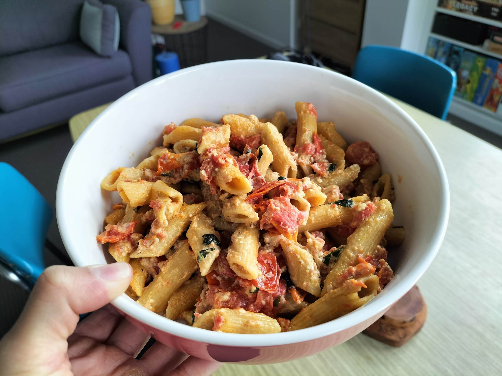

Baked Feta Pasta

What this?
Easy baked feta pasta recipe. I made this pasta to use up the feta I had in the fridge. Originally made on 22/5/2023.
This recipe is originally from here .
Ingredients
- 500g cherry tomatoes
- 1/2 cup olive oil
- salt and pepper to taste
- 225g block feta
- 280g pasta
- 1 clove garlic, minced
- 1/4 cup basil, thinly sliced
Method
- Preheat oven to 200oC.
- Add cherry tomatoes, oil, salt and pepper to an oven safe dish and mix. Add block of feta to the middle of the dish
- Put in oven for 30 minutes. Raise the heat to 225oC and continue to cook until tomatoes and feta are golden brown, 10-15 minutes.
- Cook pasta, set aside 1/2 cup of the cooking water.
- As soon as the feta and tomatoes are out of the oven, add the garlic and mix all together, crushing the tomatoes. Stir in the pasta and basil. EAT!
My Review
Yum. I'd make again. Great winter comfort food. Makes 2 and a halfish serves though. Also annoying that is uses less than a full packet of the protein pasta.
Back to home